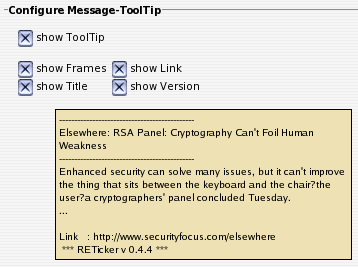

IV.V. ToolTip (over message)
Configure Message-ToolTip
Hier kann der ToolTip, welcher angezeigt wird, wenn die Maus über der Nachricht im Ticker verweilt, konfiguriert werden. Wiederum werden die Änderungen in den weiteren Optionen in ihren Effekten auf das ToolTip-Layout in der angezeigten Vorschau verdeutlicht.